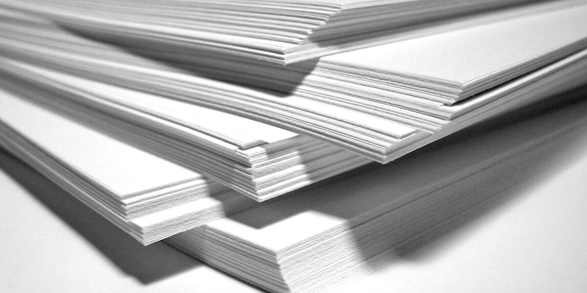
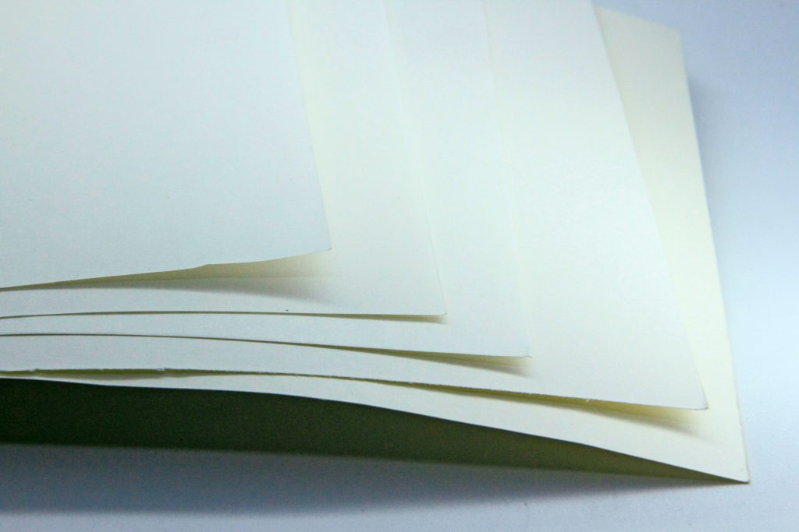
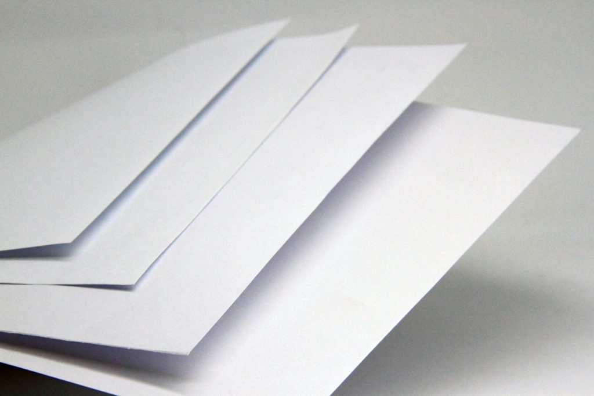
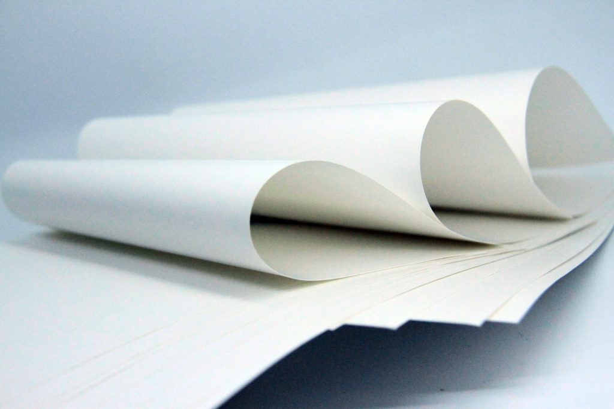
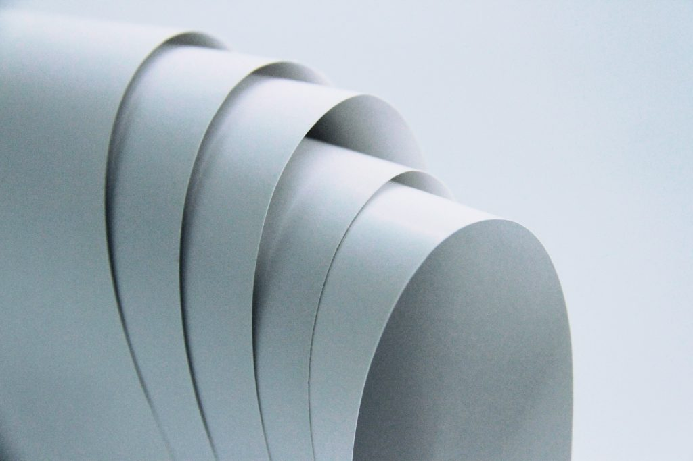

Немного о бумаге
- Бумага — один из первых материалов, появившихся в истории человечества.
- В современном мире бумага является одним из самых востребованных материалов.
- Помимо бумаги, мы имеем доступ к огромному количеству других материалов, которые используются в самых разнообразных сферах деятельности человека.
- Однако среди них бумага занимает особое место. На самом деле, она является самым распространенным материалом, который используется для изготовления самых разных вещей.
Характеристики Premium бумаги
- Класс бумаги: премиум;
- Белизна: 146%;
- Плотность: 84;
- Формат: А4;
- Количество листов в пачке: 256 шт;
- Толщина: 11 мкм.
Подробное описание Premium бумаги
- Гладкая чистоцеллюлозная дизайнерская бумага без покрытия. Обладает высокими показателями непрозрачности и отличными печатными свойствами. Приятная легкая шероховатость поверхности придает бумаге естественную элегантность, высоко востребованную в производстве фирменной канцелярии (бланков, конвертов, блокнотов, ежедневников), каталогов и других многостраничных изданий.
- Бумага произведена из сырья, не содержащего элементного хлора, и с соблюдением международных стандартов в области экологической безопасности, что подтверждается наличием соответствующих сертификатов, в т.ч. Лесного попечительского совета (FSC). Edizioni Avorio 1.3 производится с включением химико-термомеханической древмассы (CTMP) и отличается повышенными показателями пухлости.
- Применяется для печати люксовых изданий, ежедневников, блокнотов, открыток и приглашений, упаковки для сувениров или косметических продуктов, конвертов, каталогов и т.д.




